SPARQL
Mikel Egaña Aranguren
mikel-egana-aranguren.github.io

Mikel Egaña Aranguren
Mikel Egaña Aranguren
mikel-egana-aranguren.github.io
https://github.com/mikel-egana-aranguren/DBA

SPARQL: SPARQL Protocol and RDF Query Language
SPARQL ezagutza eskatzen duten enpresak: https://sparql.club/ (Datuak: indeed.com eta monster.com)
Liburuak: https://www.learningsparql.com/
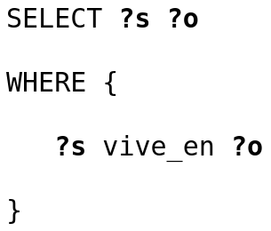
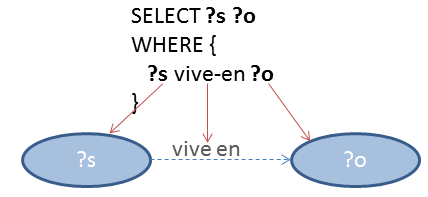
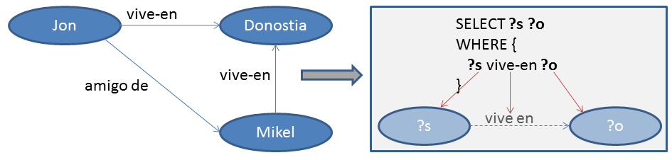
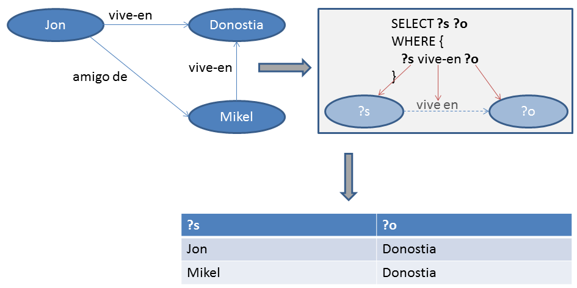
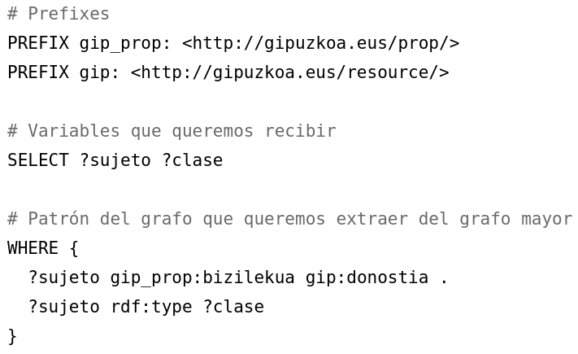
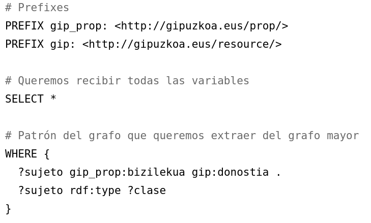
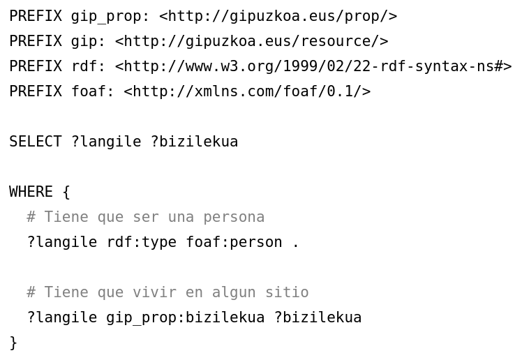
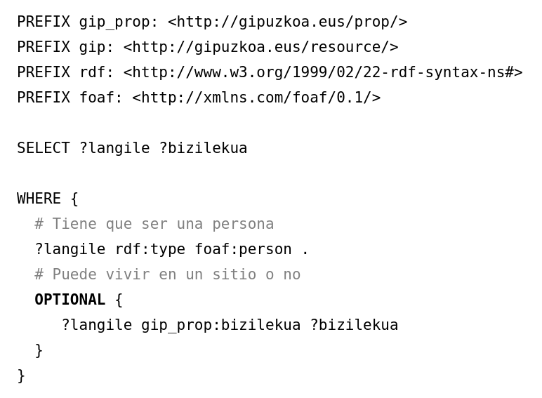
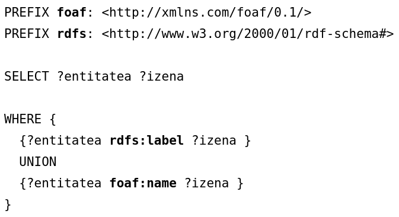
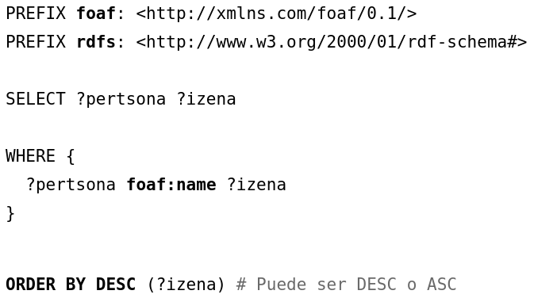
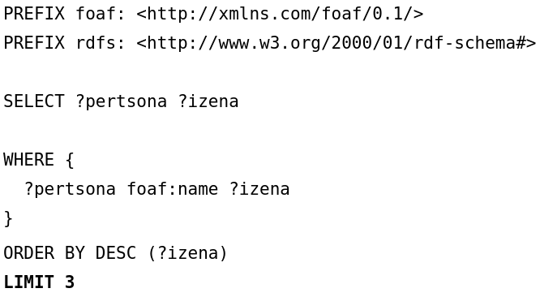
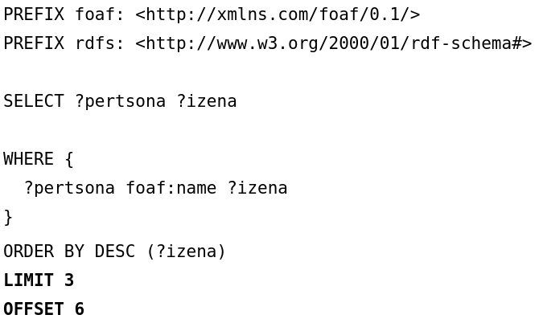
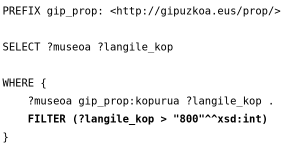
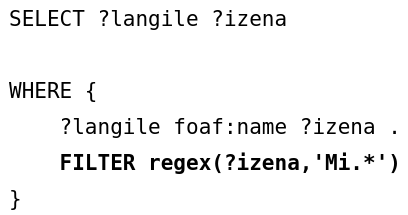
Logika: !, &&, ||
Kalkuluak: +, -, *, /
Alderapenak: =, !=, >,<
SPARQL test-ak: isURI, isBlank, isLiteral, bound
Datuetan sartu: str, lang, datatype
Gehiago: sameTerm, langMatches, regex, ...
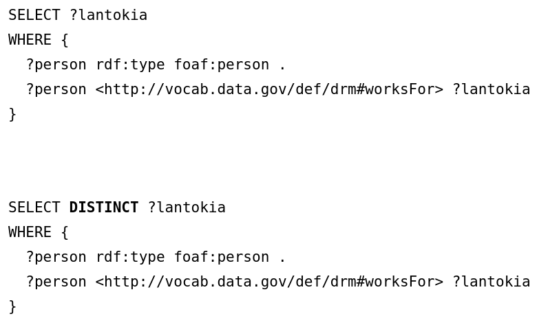
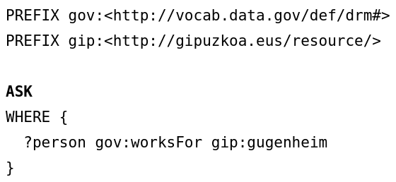
DESCRIBE <http://gipuzkoa.eus/resource/mikel-aranguren>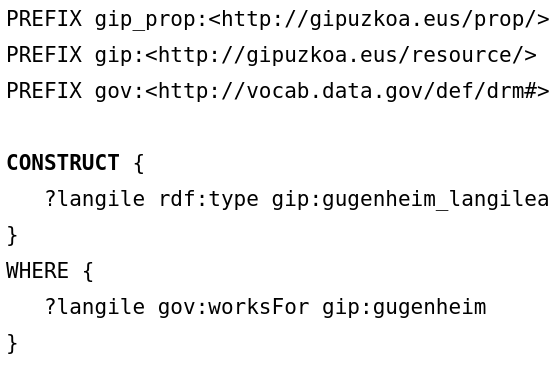
DELETE DATA {
<http://gipuzkoa.eus/resource/aitor-labajo>
rdf:type foaf:person
}DESCRIBE <http://gipuzkoa.eus/resource/aitor-labajo>
DELETE {?person rdf:type foaf:person}
WHERE {?person foaf:name ?name}
SELECT * WHERE {
?person rdf:type foaf:person
}
PREFIX gip:<http://gipuzkoa.eus/resource/>
INSERT DATA {
gip:aitor-labajo rdf:type gip:hiritar
}
DESCRIBE <http://gipuzkoa.eus/resource/aitor-labajo>
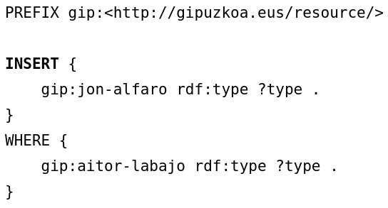
DESCRIBE <http://gipuzkoa.eus/resource/jon-alfaro>
Grafoa: tripleen multzoa
Multzo osoa URI batekin identifikatzen da (datuena ez dena)
Triple Store guztiek Default Graph bat dute
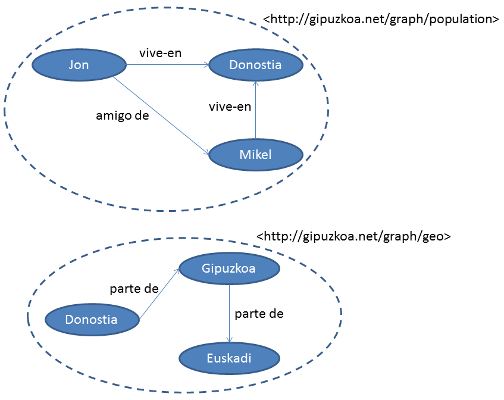
GRAFOAK oso baliagarriak dira datuei buruzko datuak gehitzeko (metadatuak): adib. jatorria, egilea, sorrera data
(beste gauza batzuen artean)
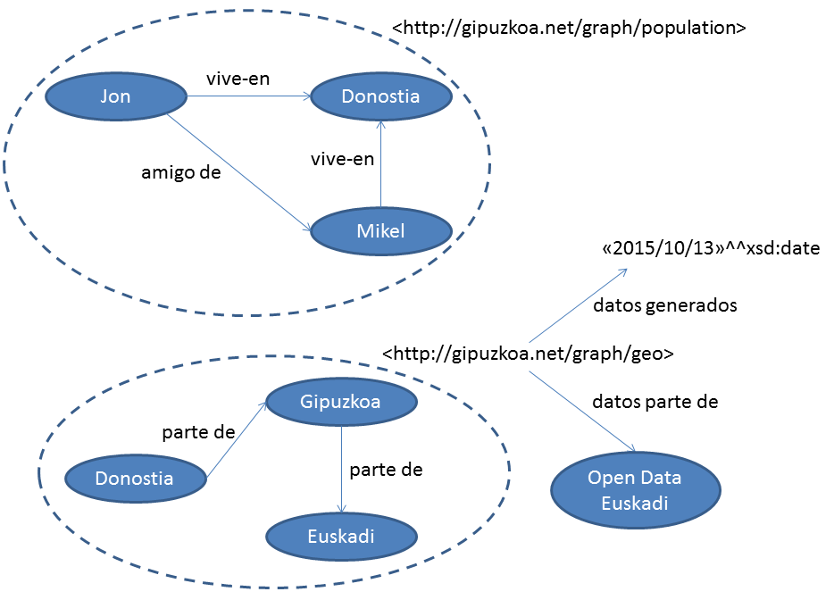
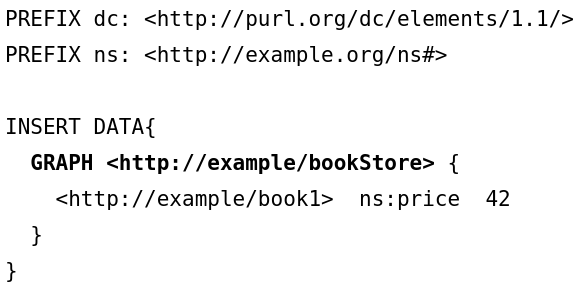
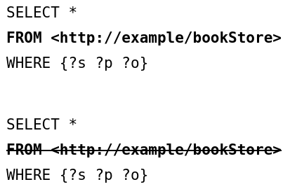
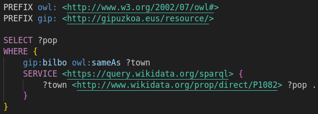
(bilbo_wikidata.ttl)